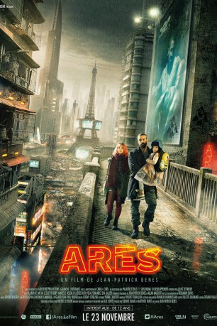

gesehen am 02.01.2018
gesehen am 02.01.2018 
 IMDB-Wertung: 6.2 / 10
IMDB-Wertung: 6.2 / 10  Metascore:
Metascore: 
In der nahen Zukunft des Jahres 2035 wird die Welt von großen Pharmakonzernen beherrscht und ein Drittel der Bevölkerung ist arbeitslos. Für die Wohlhabenden werden immer mehr Medikamente entwickelt, die ihr Leben erleichtern und verlängern, währenddessen die Menschen aus den unteren Bevölkerungsschichten als Testobjekte für die Pharmaindustrie herhalten müssen, um sich das Dach über dem Kopf oder das Essen auf dem Tisch leisten zu können. In einem wirtschaftlich abgerutschten Frankreich versucht sich der Kriegsveteran Ares als professioneller Kämpfer über Wasser zu halten. Als seine Schwester mit ihrem Nachwuchs Hilfe braucht, greift er zu einem drastischen Mittel: Ares verkauft seinen Körper, doch mit dem Ergebnis hat er nicht gerechnet. Und dieses betrifft nicht nur ihn, sondern bringt die Weltordnung zum Erschüttern.
Jahr: 2016
Dauer: 80 Minuten
FSK: 16
Land: Frankreich Studio: GaumontTonspuren:
Untertitel: Deutsch,
Auflösung: 1080p (1920x1080) Größe: 3112 MB
Genre: Thriller, Drama, Sci-Fi
Regisseur: Jean-Patrick Benes
Drehbuch: Benjamin Dupas
Soundtrack: Alex Cortés, Christophe Julien
Darsteller:
 Ola Rapace als Arès
Ola Rapace als Arès Thierry Hancisse als Coach
Thierry Hancisse als Coach Louis-Do de Lencquesaing als PDG Donevia
Louis-Do de Lencquesaing als PDG DoneviaDatei: X:\2016(A-F)\Ares - Der letzte seiner Art (2016, FSK16, 1920x1080) 3D.mkv seit 29.12.2017
Festplatte: HD 2016(A-Z)
 Es gibt insgesamt 147 Filme in der Gruppe '2016(A-F)'
Es gibt insgesamt 147 Filme in der Gruppe '2016(A-F)'